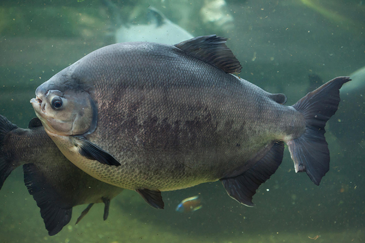
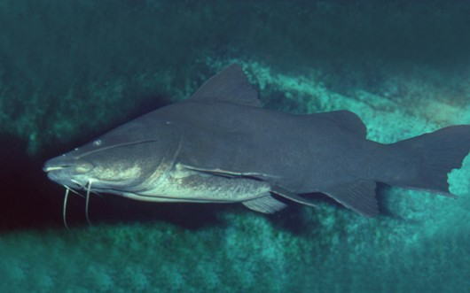
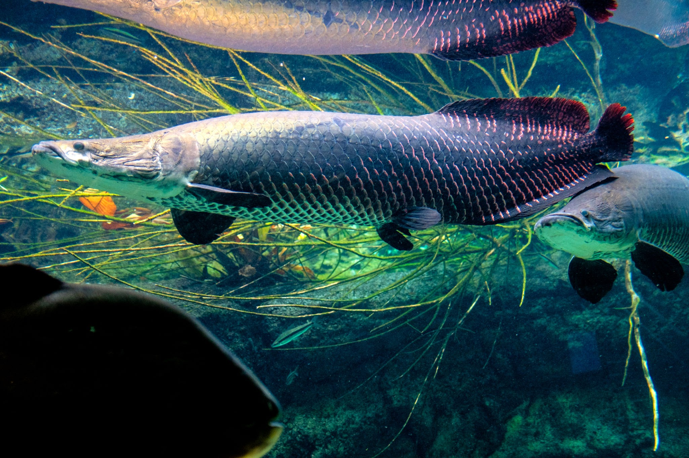
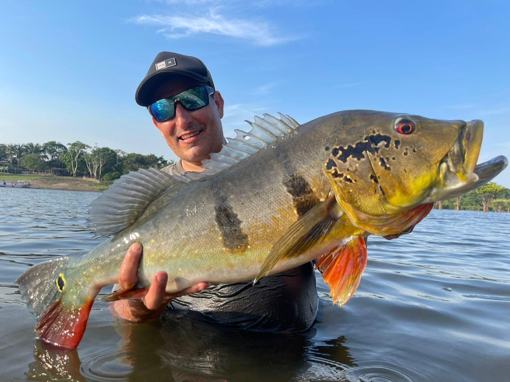
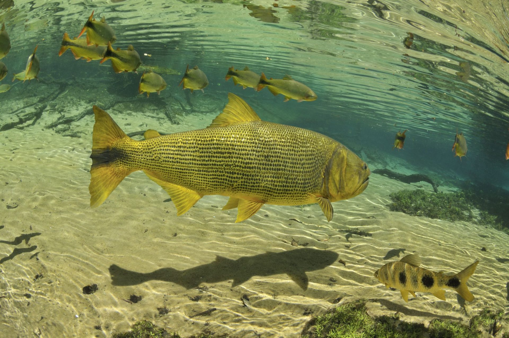

Esse site é sobre peixes brasileiros espero que goste. :D
Tambaqui é um peixe muito famoso dos pesqueiros, por ser um peixe grande e fácil de se criar.
pode chegar a 90 CM e 30 KG.
seu nome científico:Colossoma macropomum.
o Tambaqui possui um híbrido, que é a junção do tambaqui e do pacu, o "tambacu".

Pirarara é uma espécie muito famosa de bagre encontrada nas bacias Amazônica e Araguaia.
pode chegar a mais de 1,50M e mais de 50 KG.
Nome científico:Phractocephalus hemioliopterus.

Jaú/Bagre Sapo é mais uma espécie de bagre amazônico.
Seu tamanho pode chegar a pode atingir 1,90 metros de comprimento e mais de 100 kg de peso.
seu nome científico:Zungaro zungaro.

O maior peixe ósseo do planeta e provavelmente o peixe mais famoso brasileiro o Pirarucu.
O comprimento do pirarucu adulto costuma variar de 2 a 3 metros, e o peso, de 100 a 200 Kg.
Nome científico:Arapaima gigas.

Tucunaré é um peixe muito famoso na pesca esportiva e por ser um dos mais lindos.
Normalmente atingem de 50 cm ou 60 cm, mas já foram encontrados exemplares com mais de 70 cm. O peso fica entre 3 kg e 10 kg.
Nome científico:Cichla ocellaris

Dourado é muito procurado no Rio da Prata por lá ter espécimes grandes
Podem alcançar mais de um metro de comprimento e até 25 quilos.
Seu nome científico:Salminus brasiliensis
